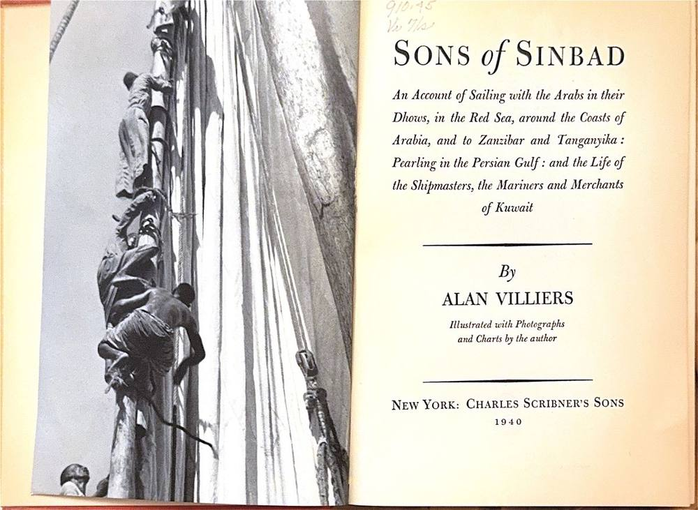

Voyage of 1938 and 1939, first published 1940 · The 1940 first edition, and pages and the index from the 2006 Arabian Publishing edition
Alan Villiers, Sons of Sindbad: the Al-Qatami pages
What it is
The Australian sea captain Alan Villiers sailed from Aden to Zanzibar and home to Kuwait in 1938 and 1939 on Ali Al-Najdi's boom. He writes «Kitami» for Al-Qatami. These pages follow five men of the family: Abdulla Kitami and his small boom, sailing in company the whole way; Bader bin Abdulwahab and the old baghla Al-Badri, which Villiers thought of buying to save; «the famous Abdul-wahhab-al-Kitami» and his great boom Al-Daw, which Villiers calls el-Dhow; Yousef bin Isa and his boom Samhan; and Mohammed Kitami, killed in the 1939 riot in Kuwait. One page names «Isa Kitami's Arab directory of the eastern seas», Eissa's Dalil Al-Muhtar, and another the Kitami house by the waterfront in Kuwait. The index pages show where each of them appears.
Why it matters
An eyewitness account of the family's nakhudas at sea, written in the season itself.
Page copies


Notes
Villiers calls Abdulwahab bin Abdulaziz the uncle of Abdulla Kitami; the family and Dr Al-Hijji record them as half brothers. The Abdulla he calls Nejdi's brother is not of our family. The «Abdul-wahhab Kalifa» on several pages is Abdulwahab Khalifa Al-Ghanim, son of Khalifa bin Shaheen Al-Ghanim («Kalifa al-Ganim»), and those passages are linked to him. Only the first pages are shown here. Family members who sign in can see all 96 pages.
Others named
Sources
Alan Villiers, Sons of Sinbad, Charles Scribner's Sons, New York, 1940; and Sons of Sindbad, Arabian Publishing, London, 2006, page numbers as shown.
How this text was made: Page copies of a published book.
Open in the interactive site